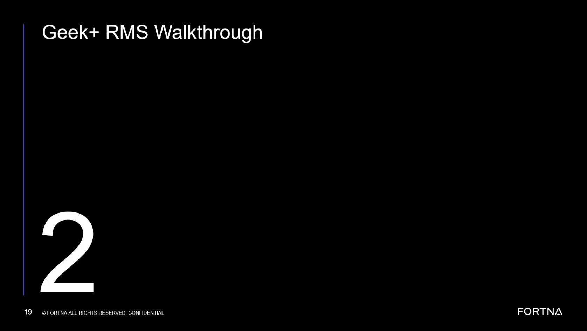
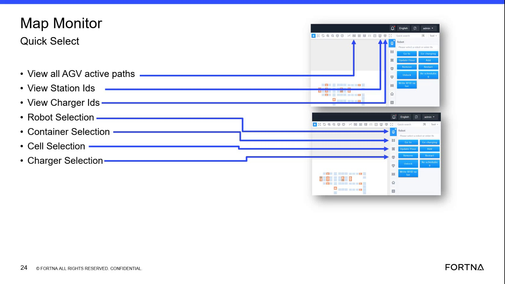

| Playbook ID | playbook_incident_228723_zone_pairing_roster_anomaly |
|---|---|
| Case ID | 228723 |
| Extraction Mode | one_or_more_playbook_candidates_when_separable |
| Confidence | medium |
| Validation Status | needs_sme_review |
Objective: Determine whether the reported issue is an active zone pairing failure accompanied by abnormal AMR routing or inability to support the affected workflow.
Why this check is next: The site reported inability to get a pair, AMRs going to the hospital, and an earlier low-battery AMR condition. RMS artifacts show status tables with abnormal-looking red entries, but exact values are unreadable.
Action: Confirm the reported pairing failure and abnormal AMR routing status (including whether any low-battery or physically constrained AMR is currently involved) by gathering both site interview observations and a readable RMS pairing/fleet-status view if available.
Healthy: The affected zone can obtain a pair and AMRs support the expected workflow rather than uniformly routing to the hospital; any RMS presentation is consistent with normal fleet state (no abnormal/red-highlight indicators that correlate to the report).
Unhealthy: The affected zone cannot obtain a pair, AMRs consistently route to the hospital lane, and/or site reports an AMR unable to support the workflow; RMS shows corresponding abnormal/exception-style entries (even if exact values are initially unclear).
Inconclusive: The report is intermittent/not reproducible, RMS is unavailable/unreadable for the relevant status table, or the evidence is insufficient to link the AMR routing/pairing symptom to current fleet state.
Suggested database check:
Expects capability: n/a
Expects surface: n/a
Preferred audience: operator, L1_support
Runbook Links:
proc_check_rms_fleet_status_shutdown_queues_zone_cycling_v1 (medium, support, score=0.6677) — Check RMS fleet status for AGVs in shutdown queues and zone cyclingEvidence Collection Procedures:
proc_check_rms_fleet_status_shutdown_queues_zone_cycling_v1 — Check RMS fleet status for AGVs in shutdown queues and zone cycling (L1_support): Use the RMS / fleet status UI to verify that AGVs are held in shutdown queues (shutdown state), then cycle into their assigned zones (4 zones) after startup, consistent with the system state model described in the segment.Source Evidence:
Linked Runbook Procedures:
Branches:
unhealthy → node_2 when Zone pairing failure and abnormal AMR routing/physical condition confirmedinconclusive → node_6 when Pairing and AMR behavior are normal, localized, or not reproducibleproc_check_rms_fleet_status_shutdown_queues_zone_cycling_v1)Summary:
Use the RMS / fleet status UI to verify that AGVs are held in shutdown queues (shutdown state), then cycle into their assigned zones (4 zones) after startup, consistent with the system state model described in the segment.
When To Use:
When you need to confirm that AGVs are in the shutdown state (shutdown queues) and then transition into their assigned zones (4 zones) after startup, using the live fleet status view in RMS.
Runbook Branches:
| Outcome | Descriptor | Next |
|---|---|---|
healthy | Pairing works and AMRs behave normally (no persistent hospital diversion). | node_6 |
unhealthy | Active zone pairing failure with abnormal hospital routing / workflow inability. | node_2 |
inconclusive | Intermittent/unreproducible symptom or evidence cannot be validated via readable RMS. | node_6 |
Source: training_video / training_video_day1
Procedure Steps:
Responsible role: L1_support
Instruction:
Open the RMS / fleet status UI (rms_ui) and navigate to the AGV list/map view where you can see each AGV’s current state and/or location/zone assignment.
Healthy condition:
The RMS fleet status view is accessible and shows AGVs with state/location/zone information (enough to distinguish shutdown queues vs zone assignments).
Expected result:
You can see the AGV list/map view in RMS with each AGV’s current state and/or location/zone assignment visible.
Responsible role: L1_support
Instruction:
In the RMS AGV list/map view, identify the relevant AGVs and confirm that their current state and/or location/zone assignment corresponds to shutdown queues (shutdown state), not idle/running zones.
Healthy condition:
AGVs expected to be in shutdown are consistently shown as being in shutdown queues/shutdown state.
Expected result:
AGVs that should be in shutdown are displayed in a shutdown queues/shutdown state condition in RMS (observable via their state and/or location/zone assignment).
Responsible role: L1_support
Instruction:
Observe the AGVs in RMS over the expected startup transition window and confirm they move from shutdown queues into their assigned zones. The segment references 4 zones.
Healthy condition:
AGVs move out of shutdown queues into zone assignments rather than remaining in shutdown state.
Expected result:
AGVs transition from shutdown queues/shutdown state into their assigned zones (4 zones referenced in the segment).
Step Images:

Responsible role: L1_support
Instruction:
If the segment’s scenario is active (tipper issue leading to hospital/reject handling), confirm in RMS that AGVs still follow the shutdown/startup cycle model: shutdown queues → assigned zones, rather than remaining stuck in shutdown queues.
Healthy condition:
No prolonged retention in shutdown queues beyond what the shutdown/startup logic implies; AGVs still enter their zone assignments.
Expected result:
Even during the tipper/hospital scenario, AGVs still transition from shutdown queues into their assigned zones in RMS.
Success Criteria:
Failure Conditions:
Objective: Determine whether recent AMR replacement or remove/add activity left an AMR missing, unmapped, incorrectly rostered, or otherwise unable to receive the expected task.
Why this check is next: Support discussion proposed improper remove/add or RMS rostering as a possible explanation. Resolution text states that a robot was shown as not mapped, but the source does not prove that this was the confirmed root cause.
Action: Inspect RMS roster/map state for the fleet/robots associated with the symptom to determine whether a specific AMR is missing, unmapped/not mapped, incorrectly rostered, or otherwise unable to receive expected tasks—then correlate that abnormal mapping to the site’s remove/add history (without relying on unreadable identifiers).
Healthy: The relevant AMRs are present in the expected RMS roster and shown with normal mapped/assigned state; their displayed location/assignment is consistent with site-reported physical state; no unmapped/exception roster/mapping persists that correlates to the symptom.
Unhealthy: An AMR is shown as not mapped/absent or in an abnormal roster/mapping state conflicting with the site’s reported physical state and/or correlating with failure to support tasks after replacement/remove/add.
Inconclusive: The RMS screenshot/view is too unclear to identify relevant roster/mapping state or the site cannot identify which AMR(s) were replaced/added; abnormal presentation cannot be reliably linked to the symptom.
Suggested database check:
Expects capability: n/a
Expects surface: n/a
Preferred audience: operator, L1_support
Runbook Links:
proc_check_rms_fleet_status_shutdown_queues_zone_cycling_v1 (medium, support, score=0.6668) — Check RMS fleet status for AGVs in shutdown queues and zone cyclingEvidence Collection Procedures:
proc_check_rms_fleet_status_shutdown_queues_zone_cycling_v1 — Check RMS fleet status for AGVs in shutdown queues and zone cycling (L1_support): Use the RMS / fleet status UI to verify that AGVs are held in shutdown queues (shutdown state), then cycle into their assigned zones (4 zones) after startup, consistent with the system state model described in the segment.Source Evidence:
Linked Runbook Procedures:
Branches:
unhealthy → node_3 when Unmapped/incorrectly rostered or assignment-ineligible AMR linked to symptominconclusive → node_6 when Roster/mapping appears normal or cannot be interpretedproc_check_rms_fleet_status_shutdown_queues_zone_cycling_v1)Summary:
Use the RMS / fleet status UI to verify that AGVs are held in shutdown queues (shutdown state), then cycle into their assigned zones (4 zones) after startup, consistent with the system state model described in the segment.
When To Use:
When you need to confirm that AGVs are in the shutdown state (shutdown queues) and then transition into their assigned zones (4 zones) after startup, using the live fleet status view in RMS.
Runbook Branches:
| Outcome | Descriptor | Next |
|---|---|---|
healthy | RMS shows no abnormal/unmapped roster state linked to the symptom. | node_6 |
unhealthy | RMS indicates an unmapped/incorrectly rostered AMR associated with the symptom. | node_3 |
inconclusive | RMS is unreadable/unclear or site history can’t identify the affected AMR(s). | node_6 |
Source: training_video / training_video_day1
Procedure Steps:
Responsible role: L1_support
Instruction:
Open the RMS / fleet status UI (rms_ui) and navigate to the AGV list/map view where you can see each AGV’s current state and/or location/zone assignment.
Healthy condition:
The RMS fleet status view is accessible and shows AGVs with state/location/zone information (enough to distinguish shutdown queues vs zone assignments).
Expected result:
You can see the AGV list/map view in RMS with each AGV’s current state and/or location/zone assignment visible.
Responsible role: L1_support
Instruction:
In the RMS AGV list/map view, identify the relevant AGVs and confirm that their current state and/or location/zone assignment corresponds to shutdown queues (shutdown state), not idle/running zones.
Healthy condition:
AGVs expected to be in shutdown are consistently shown as being in shutdown queues/shutdown state.
Expected result:
AGVs that should be in shutdown are displayed in a shutdown queues/shutdown state condition in RMS (observable via their state and/or location/zone assignment).
Responsible role: L1_support
Instruction:
Observe the AGVs in RMS over the expected startup transition window and confirm they move from shutdown queues into their assigned zones. The segment references 4 zones.
Healthy condition:
AGVs move out of shutdown queues into zone assignments rather than remaining in shutdown state.
Expected result:
AGVs transition from shutdown queues/shutdown state into their assigned zones (4 zones referenced in the segment).
Step Images:
Responsible role: L1_support
Instruction:
If the segment’s scenario is active (tipper issue leading to hospital/reject handling), confirm in RMS that AGVs still follow the shutdown/startup cycle model: shutdown queues → assigned zones, rather than remaining stuck in shutdown queues.
Healthy condition:
No prolonged retention in shutdown queues beyond what the shutdown/startup logic implies; AGVs still enter their zone assignments.
Expected result:
Even during the tipper/hospital scenario, AGVs still transition from shutdown queues into their assigned zones in RMS.
Success Criteria:
Failure Conditions:
Objective: Choose whether the affected AMR should remain isolated from the active fleet under an authorized site procedure, or whether the evidence does not support that path.
Why this check is next: The source records site-side removal of a robot from the system and placement on charger after discussion of roster and mapping concerns. It does not provide a complete or repeatable removal/add procedure.
Action: Use the evidence to choose whether an authorized site role should proceed with isolation/remove-from-system of the identified unmapped/incorrectly rostered AMR, or whether the evidence does not support that recovery path (or is unsafe/unauthorized).
Healthy: Evidence shows a specific AMR associated with symptom that can be safely isolated/removed, and authorization/safety prerequisites are met by the site and supported by available evidence.
Unhealthy: RMS indicates unmapped/abnormal roster state and site confirms the same AMR is physically constrained/unavailable/out of service, and the remove/isolation path is authorized and supported by evidence.
Inconclusive: RMS and physical observations disagree, current abnormal state can’t be confirmed as current, or authorization/safety prerequisites are not confirmed.
Suggested database check:
Expects capability: n/a
Expects surface: n/a
Preferred audience: operator, L2_support
Runbook Links:
Source Evidence:
Linked Runbook Procedures:
Branches:
unhealthy → node_4 when Authorized site role confirms safe isolation/removal is supportedescalate → node_6 when Safe authorization/physical access/sufficient roster evidence absentNo linked runbook content available.
Objective: Carry out the source-supported high-level recovery action when the affected AMR is linked to the abnormal roster or mapping state and the authorized site procedure permits it.
Why this check is next: The source-supported recovery was site removal of an AMR from the system followed by placement on charger. The source does not document exact steps and does not establish that this action is universally appropriate.
Action: Perform an authorized AMR isolation/remove-from-active-system action for the identified unmapped/incorrectly rostered AMR and place it into the safe charging/holding state, then confirm it is no longer contributing to abnormal pairing/hospital-routing behavior.
Healthy: The AMR is isolated/removed from active operation and placed in the intended safe charging/holding state; RMS no longer shows it as contributing to the abnormal pairing condition.
Unhealthy: The AMR remains active in the problematic fleet state after the site action, or the AMR cannot be placed into a safe holding/charging state; symptom persists immediately after action.
Inconclusive: Only the physical action is reported without corresponding system-state confirmation, or RMS evidence is unreadable/unavailable or contradictory.
Procedure Reference:
Prerequisites:
Safety checks:
Expects capability: n/a
Expects surface: n/a
Preferred audience: operator, L2_support
Runbook Links:
Source Evidence:
Linked Runbook Procedures:
Decision Outcomes:
healthy (observer=site_or_remote; tool=RMS / robot status UI + site confirmation): Authorized isolation/removal completed and AMR is no longer active in abnormal state.unhealthy (observer=site_or_remote; tool=RMS / robot status UI + site confirmation): Isolation/removal fails or leaves AMR active.inconclusive (observer=site_or_remote; tool=RMS / robot status UI + site confirmation): Action reported but system-state confirmation is missing/unclear.Branches:
healthy → node_5 when Authorized isolation/removal completed successfullyescalate → node_6 when Isolation/removal cannot be completed or leaves AMR active in abnormal stateNo linked runbook content available.
Objective: Confirm that the affected workflow has recovered after the authorized fleet-state action and remains operational during observation.
Why this check is next: The source reports that operation resumed after robot removal and remained operational during approximately 10 minutes of monitoring, while acknowledging that the recovery was reported rather than independently confirmed by readable live RMS details.
Validate: Validate that the affected workflow returns to normal operation after the authorized fleet-state action, by confirming zone pairing success and expected AMR routing behavior, and monitoring stability briefly before declaring recovery.
Success: Zone pairing succeeds; AMRs resume expected operation; the system remains operational during the monitoring window; RMS no longer shows the relevant abnormal roster/mapping indication (when readable).
Failure: Zone pairing remains unavailable; AMRs continue abnormal hospital routing; the same fleet-state symptom returns during monitoring; recovery cannot be reproduced by the site.
Inconclusive: Recovery is based only on messages/case notes without direct site observation; monitoring window is insufficient; RMS evidence is unavailable/unreadable.
Validation Gate:
Validation checklist:
Required evidence sources: a site interview
Stable-operation observation: Observe the affected workflow for recurrence during the defined observation window; a reachable screen or successful request alone is not recovery.
Expects capability: n/a
Expects surface: n/a
Preferred audience: operator, L1_support
Runbook Links:
proc_display_station_ids_on_map_monitor_quick_select_v1 (medium, support, score=0.4855) — Display Station IDs on the Map Using Map Monitor Quick SelectEvidence Collection Procedures:
proc_display_station_ids_on_map_monitor_quick_select_v1 — Display Station IDs on the Map Using Map Monitor Quick Select (L1_support): Use the RMS / fleet status UI Map Monitor Quick Select icon “View Station Ids” to overlay unique station identifiers on the live map. This helps identify/debug station-related issues by confirming station locations and their unique IDs are visible.Source Evidence:
Linked Runbook Procedures:
Branches:
healthy → unhealthy → node_6 when Pairing remains unavailable or abnormal hospital routing persists/returnsproc_display_station_ids_on_map_monitor_quick_select_v1)Summary:
Use the RMS / fleet status UI Map Monitor Quick Select icon “View Station Ids” to overlay unique station identifiers on the live map. This helps identify/debug station-related issues by confirming station locations and their unique IDs are visible.
When To Use:
When you need to visually confirm station locations and their unique station IDs on the RMS Map Monitor map (stations are special locations distinct from cells) to support station-related identification/debugging.
Runbook Branches:
| Outcome | Descriptor | Next |
|---|---|---|
healthy | Restored pairing and stable AMR operation during monitoring. | |
unhealthy | Validation failure: pairing not restored or diversion persists/returns. | node_6 |
inconclusive | Recovery cannot be validated due to missing observation or unreadable RMS evidence. | node_6 |
Source: training_video / training_video_day1
Procedure Steps:
Responsible role: L1_support
Instruction:
Open the RMS / fleet status UI (Map Monitor) and locate the left-side “Map Monitor Quick Select” panel.
Healthy condition:
You can see the Quick Select icons on the left panel, including the “View Station Ids” icon.
Expected result:
The left-side “Map Monitor Quick Select” panel is visible with Quick Select icons including “View Station Ids”.
Step Images:

Responsible role: L1_support
Instruction:
Click the “View Station Ids” icon in the Quick Select panel.
Healthy condition:
Unique station IDs appear at station locations on the map.
Expected result:
Station locations on the map display unique station IDs after selecting “View Station Ids”.
Responsible role: L1_support
Instruction:
On the map, verify that station locations display unique station IDs.
Healthy condition:
Station locations (special locations distinct from cells) have visible unique station IDs.
Expected result:
Station locations show unique station IDs on the map.
Success Criteria:
Failure Conditions:
Objective: Stop and hand off when the roster or mapping evidence is inconclusive, the authorized recovery action cannot be performed safely, or validation fails after the supported path.
Why this check is next: The incident contains ambiguous RMS evidence, unresolved symptoms after an earlier remove/add attempt, and reported recovery that required monitoring. These support a stop condition when the lightweight path cannot establish or restore the expected state.
Action: Stop the unsupported path and prepare a technical escalation handoff to L2/L3 with the symptom description, evidence package (RMS roster/mapping evidence as available), physical AMR state, actions attempted, pairing/hospital-routing observations, and monitoring results plus explicit stop/safety conditions.
Healthy: Not applicable as a continuing-path gate; the gate is entered when troubleshooting cannot safely continue or has not restored operation.
Unhealthy: Evidence indicates unresolved symptoms (pair fail persists; abnormal hospital routing persists; mapping state unexplained) or site cannot safely perform/complete the authorized action.
Inconclusive: RMS details are unreadable or evidence contradicts; recovery is reported but cannot be reproduced/monitored reliably.
Escalation Gate:
Evidence package:
Actions attempted:
Unresolved questions:
Expects capability: n/a
Expects surface: n/a
Preferred audience: L2_support, L3_support
Runbook Links:
Source Evidence:
Linked Runbook Procedures:
Decision Outcomes:
escalate (observer=remote; tool=rms_ui evidence + site interview facts): Hand off for deeper technical investigation.Branches:
escalate → escalate → escalate → No linked runbook content available.
| From Node | Outcome | Condition | Next Node |
|---|---|---|---|
node_1 | unhealthy | Zone pairing failure and abnormal AMR routing/physical condition confirmed | node_2 |
node_1 | inconclusive | Pairing and AMR behavior are normal, localized, or not reproducible | node_6 |
node_2 | unhealthy | Unmapped/incorrectly rostered or assignment-ineligible AMR linked to symptom | node_3 |
node_2 | inconclusive | Roster/mapping appears normal or cannot be interpreted | node_6 |
node_3 | unhealthy | Authorized site role confirms safe isolation/removal is supported | node_4 |
node_3 | escalate | Safe authorization/physical access/sufficient roster evidence absent | node_6 |
node_4 | healthy | Authorized isolation/removal completed successfully | node_5 |
node_4 | escalate | Isolation/removal cannot be completed or leaves AMR active in abnormal state | node_6 |
node_5 | healthy | Pairing returns and stable AMR operation during monitoring | |
node_5 | unhealthy | Pairing remains unavailable or abnormal hospital routing persists/returns | node_6 |
node_6 | escalate | Evidence inconclusive / cannot justify supported recovery decision | |
node_6 | escalate | Authorized recovery action cannot be performed safely | |
node_6 | escalate | Recovery does not restore operation or abnormal state returns | |